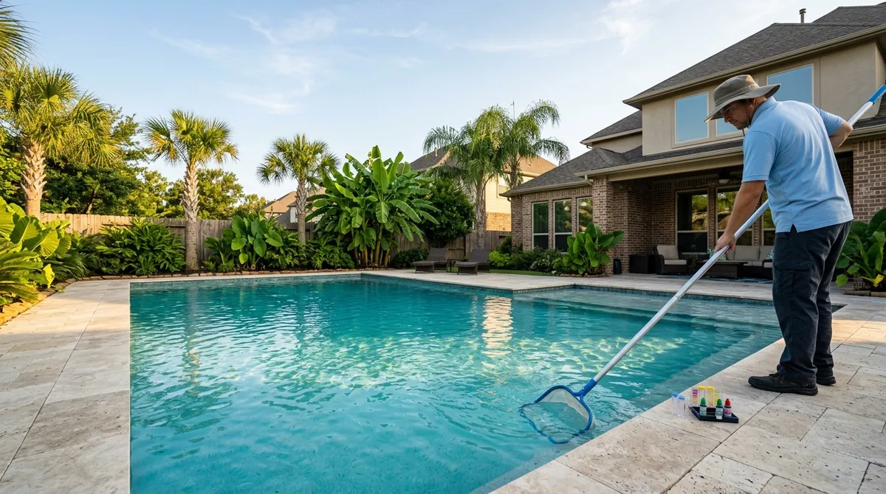

Katy pool service, crystal clear all summer.
A pool tech who skims, brushes and balances your water every week and sends you the readings.
What’s going on with the pool? Tap one. We’ll set up the right visit.
What we do
- Weekly pool serviceWe skim, brush, vacuum, empty baskets and balance the water. Chemicals are included.Learn more about weekly pool service →
- Green-to-cleanWe shock, brush and vacuum every day until the water is blue and clear again, usually in 3 to 5 days.Learn more about green-to-clean →
- Cloudy water fixesWe test for the real cause, from low chlorine to a worn filter, and fix that instead of guessing.Learn more about cloudy water fixes →
- Filter cleaningCartridge and sand filters cleaned or swapped so your pump works less and the water stays clear.Learn more about filter cleaning →
- Pump and heater repairPumps, motors, heaters and lights diagnosed and repaired, with the part shown to you.Learn more about pump and heater repair →
- Salt systems and leaksSalt cells cleaned and replaced, and slow leaks found with a bucket test before they get big.Learn more about salt systems and leaks →
The Free Pool Check
A pool tech tests your water, looks at the pump, filter and baskets, and gives you a written price the same day.
- Full water testChlorine, pH, alkalinity and stabilizer, explained in plain words.$40 value
- Equipment look-overPump, filter, heater and salt cell checked for wear and leaks.$75 value
- Written optionsWeekly service and one-time fixes, side by side, with prices.Included
- Photos of the problemSee what we see, on your phone.Included
How it works
- 1Book onlinePick a day and time. It lands on our calendar right away.
- 2We text before we arriveYou see who is coming and when.
- 3See the resultsReadings, photos and your invoice in one place after every visit.
- Techs trained in pool chemistry and equipment safety
- TDLR-licensed installers for pumps, heaters and lights (demo license)
- Insured, and backwash never goes into the street or storm drain
Weekly full service
Weekly full service
$265/mo
- Skim, brush, vacuum, baskets every week
- Chemicals included
- Readings and photos after every visit
Pool + spa
$310/mo
- Weekly full service
- Spa balanced and cleaned
- Heater checked monthly
Questions
How much does pool service cost in Houston?
Weekly full service with chemicals usually runs about $150 to $300 a month, depending on pool size. Ours is $265 a month with chemicals included.
How much is a green-to-clean?
A mild green pool is often a few hundred dollars and a dark green one can be $500 or more. It depends on pool size and how bad the algae is, and you get a written price first.
Do I need a license to clean a pool in Texas?
Not for cleaning and balancing water. Swapping a pump, heater or light needs a TDLR Residential Appliance Installer License, and new circuits need a licensed electrician.
Why does my Houston pool turn green so fast?
Heat, rain and sun burn off chlorine quickly, and runoff adds algae food. A weekly visit plus the right stabilizer level keeps it from tipping over.
Can I swim right after you shock the pool?
No. Wait until your tech tests the water and marks it safe, usually the next day or two. Cloudy water also hides the bottom, which is a safety risk.
Book a free pool check.
No cost, no obligation. Pool already green? Tell us below and we will move you up the list.